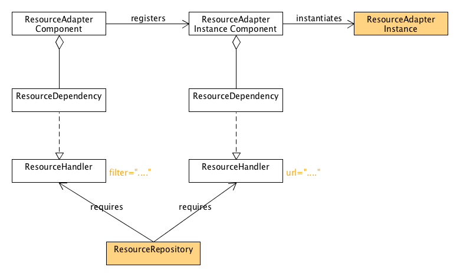

Dependency Manager - Resource adapters
Resource adapters are a special type of adapters which can adapt a resource into an OSGi service. These resources can be all kinds of resources, e.g. bundle resources, files, database records, anything as long as it can be resolved though a URL.
The diagram below illustrates the classes involved in the resource adapter pattern:

The yellow elements have to be implemented in order to use the pattern.
A resource adapter is configured as follows:
manager.add(createResourceAdapter("*.MF", true, null, "changed") .setImplementation(ManifestAdapter.class));
The filter semantics depend on the resource repository. In this example the resource repository will be serving bundle resources, so we're using a standard file wildcard filter. As the filter specifies in this case the resource of interest is the bundle manifest. For each MANIFEST.MF found a new instance of ManifestAdapter will be created and registered. Each instance gets access to the resource by injecting the URL of the resource into the implementation object.
public class ManifestAdapter { private volatile URL url; void start() { System.out.println("started: " + url); } }
But how does DM know where to go looking for manifest files? We'll it does not automatically. It requires you to implement a resource repository component. For each resource adapter service DM launches a ResourceHandler service tracking the resources the resource adapter is interested in. A resource repository is responsible for tracking resources and notifying adding / changing and removal of the resources from the repository. Notifying these resource 'events' is done by invoking the corresponding method on the ResourceHandler service.
We'll explain how to implement a resource repository by an example. The example resource repository is a bundle resource repository which as it's name says, is capable of serving bundle resources.
A simplified bundle resource repository looks as follows:
public class BundleResourceRepositoryImpl { private Map<ServiceReference, ResourceHandler> handlers = new ConcurrentHashMap<>(); private volatile BundleContext context; // added callback void addHandler(ServiceReference ref, ResourceHandler handler) { handlers.put(ref, handler); if (ref.getProperty(ResourceHandler.URL) != null) { URL url = (URL) ref.getProperty(ResourceHandler.URL); notifyMatchingInitialResource(url, handler); } else { String filter = (String) ref.getProperty(ResourceHandler.FILTER); notifyMatchingInitialResources(filter, handler); } } // removed callback void removeHandler(ServiceReference ref, ResourceHandler handler) { handlers.remove(ref); } private void notifyMatchingInitialResource(URL url, ResourceHandler handler) { if (bundleContainsResource(url)) { handler.added(url, new Hashtable<String, String>()); } } @SuppressWarnings("unchecked") private void notifyMatchingInitialResources(String filter, ResourceHandler handler) { Enumeration<URL> entries = context.getBundle().findEntries("/", filter, true); while (entries.hasMoreElements()) { URL entry = entries.nextElement(); handler.added(entry, new Hashtable<String, String>()); } } private boolean bundleContainsResource(URL url) { return true; // more specific checks required } }
The resource repository is registered in the bundle activator as follows:
manager.add(createComponent().setImplementation(BundleResourceRepositoryImpl.class) .add(createServiceDependency().setService(ResourceHandler.class).setCallbacks("addHandler", "removeHandler")));
A resource repository implementation must have a dependency on resource handlers. The ResourceHandler service has two important service properties:
- "filter" (
ResourceHandler.FILTER) - "url" (
ResourceHandler.URL)
A resource handler service has either one of these properties, not both! A resource handler with a filter can match multiple resources whereas a resource handler with a url only matches a single resource. It's important the resource repository handles both situations.
When a new handler is being added, the resource repository should inform the resource handler on the resources it has that match the handler's filter or url. This is done by invoking the added(url, properties) method on the ResourceHandler. This callback results in the ResourceAdapter's ResourceDependency being satisfied, the url being injected into the resource adapter implementation object and the resource adapter implementation component being started.
Besides the added() callback the resource repository is also responsible for handling the changed() and removed() methods on change or removal of the resource from the resource repository. For a bundle resource repository that's not likely to happen, but for a filesystem resource repository this can very well be the case.